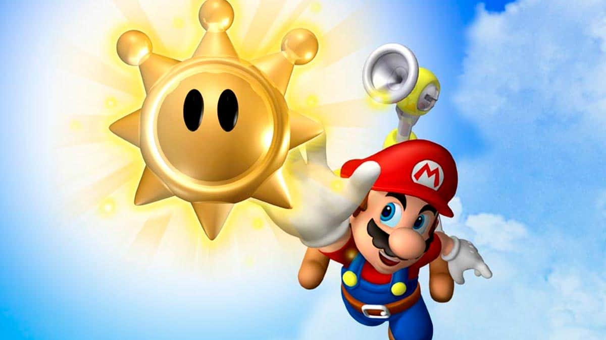

Super Mario Sunshine
¡Super Mario Sunshine arranca con Mario metiendo en la maleta suficientes camisetas rojas y monos azules para dos semanas, y saliendo de viaje con Princess Peach para pasar unas merecidas vacaciones en una isla tropical bañada por el sol. Pero el descanso y la relajación no duran mucho. Un cobarde villano ha estado contaminando el hermoso paisaje, y para empeorar las cosas, ¡es idéntico a Mario! Con los pelos del bigote erizados por la ira, Mario se dispone a limpiar la isla...y su nombre.
Para ti esto supone que en un disco de ocho centímetros cargado con la mejor aventura de Mario hasta el momento, podrás correr, saltar, rebotar, deslizarte y escalar por un mundo en 3D sorprendente y tremendamente hermoso, sumergiéndote tanto en un sol glorioso como en horas y horas de este juego de Mario que te enganchará al instante.